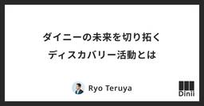

ダイニーなプロダクト
https://note.com/dinii/m/mf6424286cfa2
ダイニーのプロダクトの発信をまとめています。 Zenn に ダイニー Tech Blog ( https://zenn.dev/p/dinii ) をオープンしました 。 ダイニーのプロダクト開発や開発組織、どんなプロダクトなのか、どのように開発しているのかについて書いているブログです。
フィード

ダイニーの未来を切り拓くディスカバリー活動とは 1
1
ダイニーなプロダクト
ダイニーでプロダクトマネージャーチームのマネージャーをしているteruyaです。前回はダイニーにとっての競争とは何かについて書きました。今回は、ダイニーの競争戦略を実現するために重要なディスカバリー活動とは何か、についてお話ししていきます。「すべての人の "飲食"インフラになる。」という壮大なビジョンを真正面に捉え、ダイニーでは飲食業界の構造的な課題を解決するためのプロダクト開発に取り組んでいます。ダイニーではこのビジョンを単なるスローガンでなく、現実的に到達すべき目標として捉えているため、山の頂への道のりは長く、着実に前進していく仕組みが必要です。Company Deckにある通り、ビジョン実現のために必要なプロダクト群は多くが未踏の状態です。この非連続的かつ創造的なムーブメントを現実のものにするため、通常のプロダクト企画・開発サイクルとは別にディスカバリー活動を行っています。Unfair Advantageを生み出すディスカバリー活動続きをみる
4日前

AI エージェントを仕組みから理解する
ダイニーなプロダクト
はじめにこんにちは、ダイニーの ogino です。この記事では、AI エージェントや MCP に入門しようとしている人向けに、エージェントの内部実装について概説します。これを理解することで、現状の AI にできることが明確になり、今後の技術動向を追う上でも役に立つはずです。続きをみる
17日前
PdM入社エントリ：10年勤めたfreeeを離れ、ダイニーへ
ダイニーなプロダクト
加盟店のマグロスタンダードさんで歓迎会を開いていただきました。奥の真ん中にいるグレーのニット着て目があまり開いてないのが僕ですはじめまして、人生で初めてオモコロの記事に上司役として出演しましたfuji_tipです。記事では謎の上司役ですが、この度プロダクトマネージャーとしてダイニーに入社したので、こちらも人生初の入社エントリというものを書いてみようと思います！続きをみる
1ヶ月前
1年で4倍増！ダイニーPdMチームの記事まとめてみた。
ダイニーなプロダクト
こんにちは。ダイニー採用広報のkanonです！2024年3月までわずか2名だったダイニーのPdM、2025年4月現在、なんと8名まで増員しています！さまざまなバックグラウンドのメンバーがジョインしてくれ、ダイニーのプロダクトはさらに強固なものになっていっています。そんなダイニーチーム、自身の、そしてチームの学びを積極的に記事に起こしてくれています。ということで、ダイニーのPdMメンバーが書いてくれた記事のまとめ記事を書きました！PdMの方々はもちろん、PdMでない方々も仕事への取り組み方など参考にしていただけるポイントがあるはずです。ぜひ最後までご覧ください✨️続きをみる
1ヶ月前
失敗から学ぶ！プロダクト開発における“デリバリー”改善
ダイニーなプロダクト
こんにちは、ダイニーのプロダクトマネージャー（以下PdM）のHinoshitaです。皆さんは、“プロダクトデリバリー”と聞いて、どのようなイメージを持つでしょうか？ChatGPTに聞いてみたところ、「製品のアイデアや企画段階から最終的に顧客へ提供するまでの一連のプロセス全体」と返ってきました。もう少し具体化すると、「顧客に価値ある“プロダクトを届けきる”こと」だと思います。開発完了以降だけで見ると、”社内デリバリー” ”社外デリバリー”の大きく2つに分けられますが、ダイニーではそれぞれ以下のような施策を継続的に行っています。社内デリバリー：社内でのお触り会や社内メンバーへの共有など続きをみる
2ヶ月前
“いつも通り”を守るために。障害に対するダイニーPdMのリアル
ダイニーなプロダクト
こんにちは！ダイニーでPdMをしているokuraです。PdMの役割は、プロダクトを通して業界の課題を解決することですが、そのプロダクト自体への信頼を構築することも重要な責務の一つです。特に、プロダクトの信頼性を高める上で、障害への対応は極めて重要な要素となります。この記事では、ダイニーが障害という課題にどのように向き合い、具体的な対策と対応を行っているかをご紹介します。障害は、あらゆるプロダクトが直面する避けられない課題です。この記事が同様の課題に取り組む方々のお役に立てれば幸いです。ダイニーにおける障害とは続きをみる
2ヶ月前
AIツール「v0」を活用！飲食×エンタメ体験を爆速プロトタイピングしてみた。
ダイニーなプロダクト
はじめまして。ダイニーで「消費者向けのエンタメ体験」を作るべく、PdMとして働いている Junnosuke Nagaiです。今年2月にダイニーに入社したばかりですが、これまで僕はエンタメを軸にライブ配信サービスやアプリゲームといったtoCサービスを運営する企業で、ゲームデザイナーやPdMを務めてきました。続きをみる
2ヶ月前
AI エージェントを使ってフロントエンド開発を試した所感
ダイニーなプロダクト
はじめにこんにちは！ダイニーでソフトウェアエンジニアをしている ta21cos です。現在ダイニーでは AI エージェントの活用の検証として、Cline（AI エージェント）+ Claude 3.7 Sonnet（LLM） のお試しをしています。ちょうど実装タスクとしてフォームの新規開発案件があり、今回それを題材として Cline に開発を任せてみることにしました。（Cline は “AI assistant” ですが、日本では「AI エージェント」という呼称が普及しているため、本記事では馴染みのある方でそちらの呼び方を使います）本記事では、その過程で試したことや上手くいかなかった点、気づいたことなどをまとめていきます。今回は、Cline を使って複数ページにまたがるフォームを実装させることを題材としています。対象読者としては以下のような方を想定しています。続きをみる
2ヶ月前
シフトインだけじゃない！勤怠プロダクトを作るならバックオフィス業務を知れ！
ダイニーなプロダクト
こんにちは、こんばんは。ダイニー勤怠のプロダクトマネージャー(以下PdM)をしています、武本です。本記事では、ダイニー勤怠という新しいバックオフィス業務改善プロダクトの立ち上げを行っているPdMが、経理や労務の業務を実際に見せていただき体感したことを、どのようにプロダクト開発に活かしていくのか？そんな話をしていきたいと思います。続きをみる
2ヶ月前
役割を制限しない
ダイニーなプロダクト
こんにちは！ダイニーのプロダクトマネージャー takashi です。ダイニーでは、職務ごとの一般的な職種にとらわれず、会社・事業・チーム・自分のゴールのために、自分の役割を制限せずに活躍している方が多いので、事例を紹介しようと思います。プロダクトマネージャー続きをみる
2ヶ月前
じげん事業責任者から初めての転職。仕事でやめた3つのこと
ダイニーなプロダクト
こんにちは！2024年11月にダイニーのプロダクトマネージャーに転職した清水颯月（@shimizu_satsuki）です！前職の株式会社じげんでは、エネルギー領域の新規事業に携わり、レガシー産業のビジネス変革に邁進しました。後発でありながら、今では業界最大級の事業に成長することができたこの事業の運営で、私が常々意識していたことは、「やらないことを決め、大事なことに集中する」ことです。30代を迎え、「より大きな課題を解決する事業に挑戦したい」という想いが芽生えたことをきっかけに、もし転職をするなら新しい職場でどんな仕事に集中すべきか考えました。この記事では、大事な仕事に集中するために、私がやめた３つのことについてお伝えします。続きをみる
4ヶ月前
ダイニーにとっての競争、僕たちは何と戦っているのか
ダイニーなプロダクト
ダイニーでプロダクトマネージャーチームのマネージャーをしているTeruyaです。以前はフリー株式会社でプロダクトオーナーをしており、2024年11月ダイニーに入社しました（ダイニー社員食堂）。今日はダイニーにとっての「競争」とは何かについて、感じていることをお話しします。続きをみる
2ヶ月前
エンジニアのためのコミュニケーションベストプラクティス
ダイニーなプロダクト
ダイニーの urahiroshi です。自分は前職のメルカリ、現職のダイニーで計3年くらい Engineering Manager を務めてきましたが、Engineering Manager の本質的な役割は「チームや組織のパフォーマンスを最大化すること」だと考えています。そのためには、チーム開発におけるメンバー間のスムーズなコミュニケーションが不可欠です。これまでコミュニケーションに関するフィードバックを行ってきた中で、よく見られる改善点がいくつかあったため、それらをベストプラクティスとしてまとめてみました（それぞれのセクションで一つずつ本が書けるくらい多数のプラクティスが挙げられるテーマだと思いますが、特に頻出するポイントに絞っています）。皆さんのチーム開発にも役立てていただければ嬉しいです！レビューをするときのプラクティス続きをみる
2ヶ月前
ドメイン理解が鍵！データモデリングの失敗事例3選
ダイニーなプロダクト
はじめにこんにちは！ダイニーでソフトウェアエンジニアをしている ta21cos です。データベース設計をする際、ドメインモデリングと密接に関係することはよく知られています。適切なデータモデルがあれば、スムーズな機能開発やパフォーマンスの最適化が可能になります。一方で、ドメイン理解が不十分なまま設計を進めると、開発が進むにつれ「このモデルでは要件を表現できない」といった問題が発生してしまいます。特に、ビジネスの要望が変化し、新たな機能が要求されるたびに、「これまでのモデルで対応できるのか？」といった課題に直面することが多くなります。今回は、私たちが実際に直面した「データモデリングの失敗事例」を3つ紹介し、なぜその設計が問題だったのか、そしてどうすればより良い設計になったのかを考察していきます。「技術的には問題なく見えるデータモデルでも、ドメインの視点から見ると誤っていることがある」――この記事を通じて、データベース設計における落とし穴を共有し、より良い設計のヒントになれば幸いです。続きをみる
2ヶ月前
実践 Working Out Loud
ダイニーなプロダクト
ダイニー VP of Technology の karszawa です。突然ですが皆さんは Working Out Loud という業務の様式をご存知でしょうか？続きをみる
2ヶ月前
「読みやすいコード」を依存グラフで考える
ダイニーなプロダクト
はじめにこんにちは、ダイニーの ogino です。この記事では、コードの読みやすさを比較判断するために役立つメンタルモデルを紹介します。本記事を読むと、「このコードは良い / 悪い」という感覚が身につき、その理由を自信を持って説明できるようになるはずです。続きをみる
3ヶ月前
成果と副作用の両方に、一つのチームが責任を持つ
ダイニーなプロダクト
ダイニーの urahiroshi です。https://note.com/urahiroshi/n/n3231375a60e9 という記事を書きましたが、 その際に考慮したポイントの一つとして「意思決定によって生じるトレードオフ」があります。何か意思決定を行う場合、その実行によって生まれるポジティブな成果と、ネガティブな副作用のトレードオフが生じることがあります。続きをみる
3ヶ月前
スタートアップでセキュリティを改善していくための手順書
ダイニーなプロダクト
ダイニーの urahiroshi です。ダイニーはプロダクト・組織ともに拡大中です。プロダクトの利用が広がれば広がるほどセキュリティの重要度も増してきますが、ダイニーにはセキュリティの専門家がおらず、体系立ててセキュリティ対策を実施できていなかったという課題がありました。続きをみる
3ヶ月前
脆弱性報告で GitHub から $4,000 貰った話
ダイニーなプロダクト
はじめにこんにちは、ダイニーの ogino です。この記事では GitHub の bug bounty で脆弱性を報告し、実際に報奨金を受け取った時の体験を共有します。私は特にセキュリティの専門家ではなく、偶然に問題を見つけて初めて報告をしました。読者の方が同じようなチャンスに遭遇した時スムーズに行くように、海外からお金を受け取る上での意外なつまずきポイントや、実際に貰える金額などについて紹介します。続きをみる
3ヶ月前
1ヶ月で1000件の申込みを捌くフォームを Retool で構築した話
ダイニーなプロダクト
はじめにこんにちは！ダイニーのソフトウェアエンジニアの ta21cos です。今回はローコードツールの Retool を使って弊社が提供する新規サービスの申込みフォーム、および導入プロセスの管理システムを構築した事例を紹介します。この事例を通じて、ローコードツールの採用を検討している方、もしくはこういった裏側の作業の効率化に悩んでいる方の参考になればということで記事を書いています。まずは構築したシステムについて触れたあと、Retool を導入したことで得られた成果、そしてその過程で感じたメリットや課題点を共有します。最後に、将来的に Retool から脱却するという意思決定に至った理由についても触れていきます。画像は実際に使っている申込みフォームの一部です。続きをみる
3ヶ月前
ダイニー流！初日から自走するエンジニアオンボーディング
ダイニーなプロダクト
こんにちは、ダイニー VP of Technology の karszawa です。ダイニーでは、2025年1月、4名のエンジニア新入社員を迎え入れました。それらのメンバーのオンボーディングは、初めの一週間部分を私が担当しました。この記事ではエンジニアのオンボーディングにて工夫したことを紹介します。続きをみる
3ヶ月前
Dinii Data Team Blog Vol.2 - 飲食ドメインに Deep Dive し価値を生み出すデータ分析
ダイニーなプロダクト
こんにちは。kimujun です。この前ハワイで撮ったかわいい壁です続きをみる
4ヶ月前
Dinii Data Team Blog Vol.1 - 最もプリミティブな飲食店データの起源と価値
ダイニーなプロダクト
こんにちは。kimujun です。本人ではなく、この前ハワイで撮った壁です。続きをみる
4ヶ月前